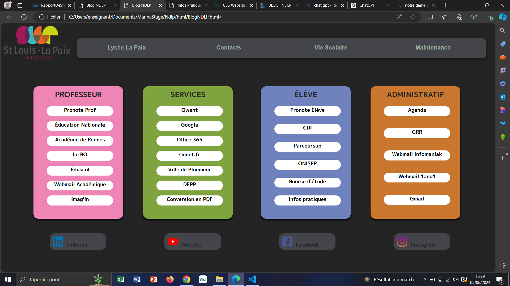

During my first-year internship in BTS SIO, I had to redesign the website of my school. That was just one page because this is a link page.



During my second-year internship in BTS SIO, I had to redesign the website of a diving association. Here is the result (some pages are not displayed to maintain a minimum level of security).
If you want to find my internship reports, click here
View reports